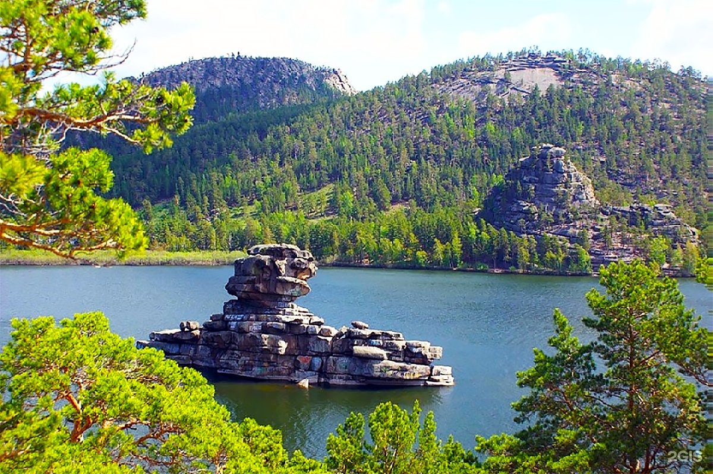
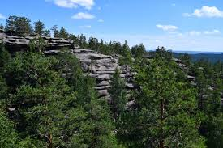

Кокшетау
Кокшетау - промышленно-административный центр региона.
Население: около 150 тыс человек
Основан: в 1824 год как военная крепость, первоначально назывался Кокшетауская крепость.
История
Кокшетау — промышленно-административный центр региона.Изначально крепость была частью оборонительной линии для защиты южных рубежей Российской империи.В XX веке развивается промышленность и образование; город становится крупным административным и культурным центром области.Город расположен на территории Кокшетауской возвышенности, в окружении холмов и лесов.Рядом находятся озёра Боровое, Шортанды, Жасылколь и другие живописные места, которые привлекают туристов.Туризм активно развивается благодаря близости к национальному парку Бурабай (Боровое).
Достопримечательности
-

Озеро Боровое (Бурабай) - Чистая вода, живописные леса, скалы и пляжи.
-

Кокшетауские горы - Небольшие горные массивы с панорамными видами на город и окрестные озёра.опулярное место для пеших прогулок, туризма и фотографирования.
Культура
Озеро Боровое (Бурабай) - Главное природное чудо региона.Чистая вода, лесные массивы, скалы и пляжи.Отлично подходит для купания, прогулок на лодке, рыбалки и фото на фоне живописных пейзажей.
Интересные факты
- Город среди холмов — Кокшетау расположен на одноимённой возвышенности, с живописными холмами и лесами, что редко для степного Казахстана.
- Боровое — жемчужина региона — близость к знаменитому озеру Боровое и национальному парку делает город популярным туристическим центром.
- Историческое наследие — сохранились здания XIX века, памятники защитникам города, а также исторические объекты крепости.